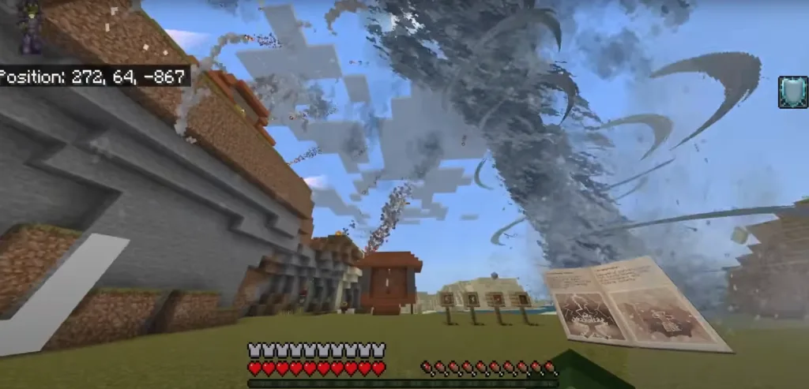
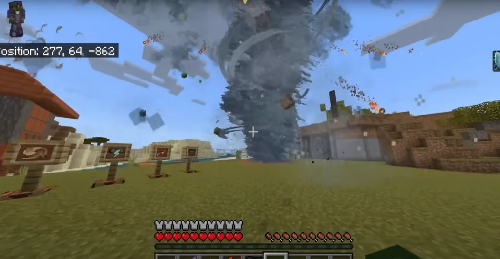
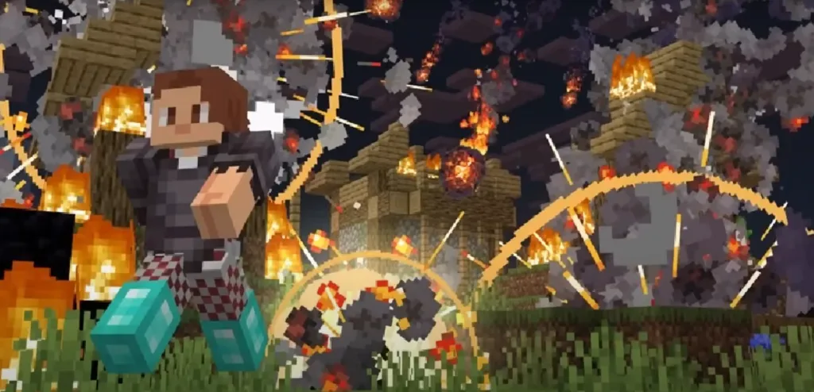
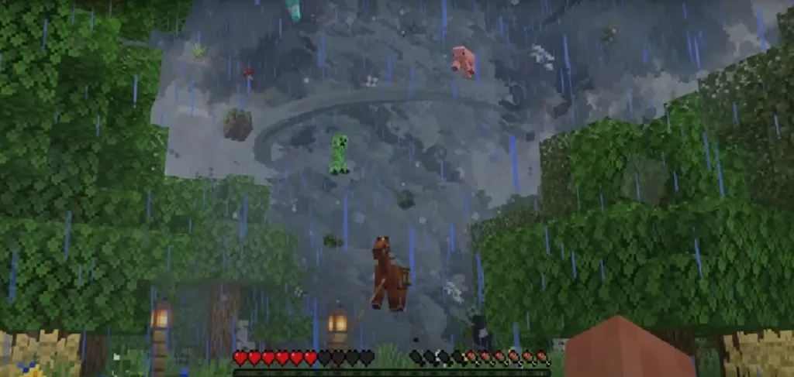
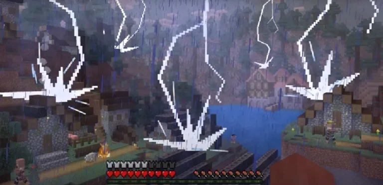
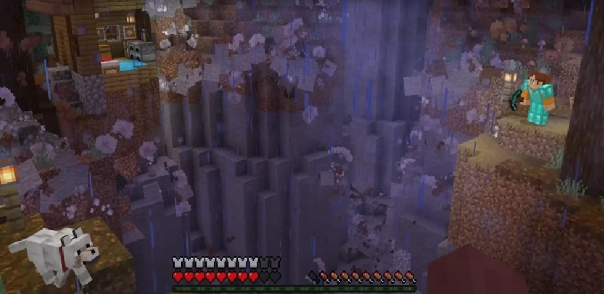
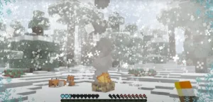
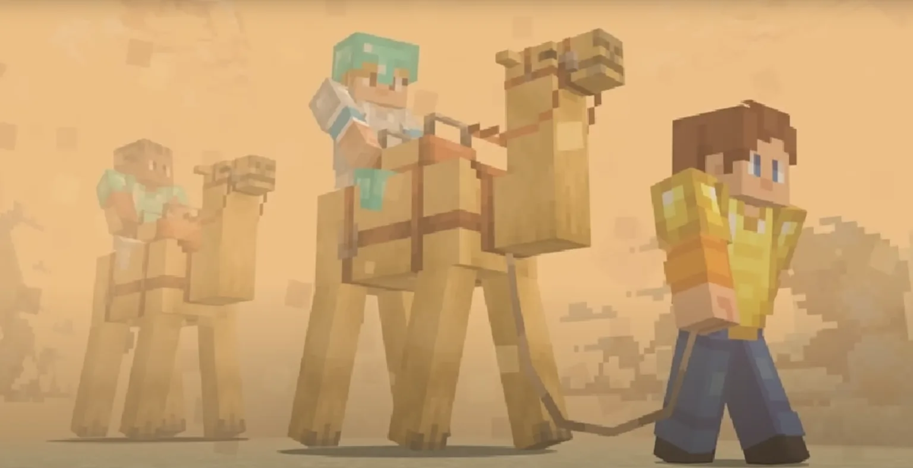
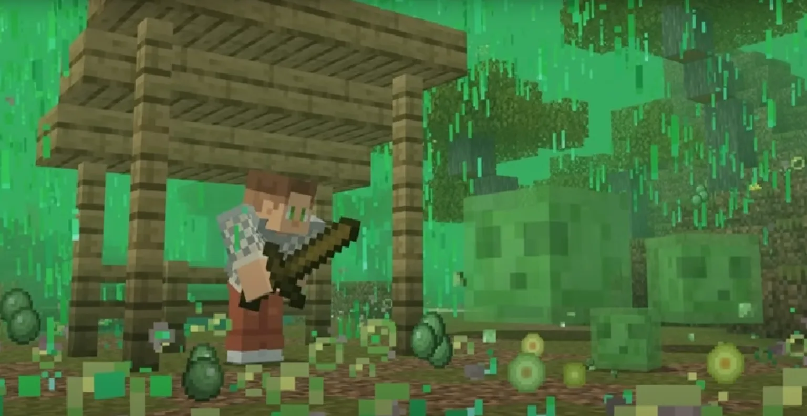
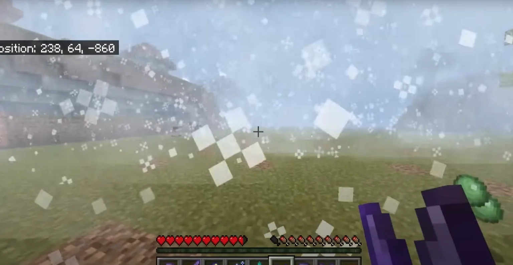
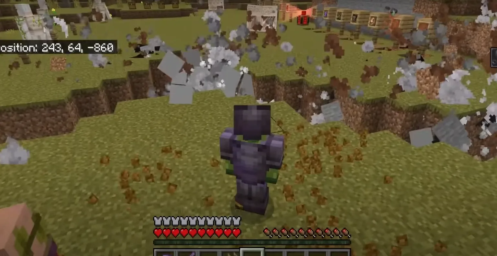
InsaneDisasters là gì?
InsaneDisasters là một mod/addon dành cho Minecraft (chủ yếu trên Bedrock/MCPE) giúp biến thế giới trong game
trở nên nguy hiểm hơn bằng cách thêm vào hàng loạt thảm họa thiên nhiên cực đoan. Thay vì chỉ có mưa
và sấm sét như bình thường, người chơi sẽ phải đối mặt với những hiện tượng có thể phá hủy môi trường,
gây sát thương lớn và tạo cảm giác sinh tồn khắc nghiệt hơn rất nhiều.
Các thảm họa chính trong InsaneDisasters
Mod này bổ sung nhiều loại thiên tai khác nhau, mỗi loại đều có cơ chế riêng và mức độ nguy hiểm cao:
Lốc xoáy (Tornado)
Lốc xoáy có khả năng hút mọi thứ xung quanh như block, mob và cả người chơi lên không trung.
Nó di chuyển liên tục và phá hủy nhà cửa rất nhanh, khiến việc sinh tồn trở nên cực kỳ khó khăn.
Mưa thiên thạch (Meteor Shower)
Những thiên thạch sẽ rơi từ trên trời xuống, tạo ra các vụ nổ lớn tương tự TNT nhưng mạnh hơn. Chúng có
thể phá hủy toàn bộ khu vực và gây cháy lan diện rộng.
Động đất (Earthquake)
Động đất làm rung chuyển mặt đất, khiến địa hình bị nứt hoặc sụp xuống.
Các công trình xây dựng có thể bị phá hủy nếu không đủ chắc chắn.
Bão tuyết (Blizzard)
Xuất hiện ở vùng lạnh, bão tuyết làm giảm tầm nhìn nghiêm trọng và có thể gây sát thương theo thời gian
nếu người chơi không tìm nơi trú ẩn.
Bão cát (Sandstorm)
Xảy ra ở sa mạc, bão cát khiến tầm nhìn gần như bằng 0 và gây sát thương dần,
làm việc di chuyển trở nên rất nguy hiểm.
Bão sấm sét (Thunderstorm nâng cấp)
Sét đánh liên tục với tần suất cao, dễ gây cháy và tạo ra các tình huống nguy hiểm bất ngờ.
Mưa axit (Acid Rain)
Loại mưa đặc biệt gây sát thương trực tiếp lên người chơi và có thể ảnh hưởng đến môi trường xung quanh,
buộc người chơi phải tìm nơi trú nhanh chóng.
Cơ chế hoạt động của mod
Các thảm họa thường xuất hiện ngẫu nhiên trong thế giới game, tạo cảm giác bất ngờ và không thể đoán trước.
Một số phiên bản cho phép người chơi điều chỉnh tần suất hoặc kích hoạt thảm họa bằng item đặc biệt.
Mod cũng đi kèm hiệu ứng âm thanh và hình ảnh sống động giúp tăng độ chân thực.
Ảnh hưởng đến gameplay
InsaneDisasters làm thay đổi hoàn toàn cách chơi Minecraft:
- Sinh tồn trở nên khó hơn rất nhiều
- Người chơi phải xây dựng nhà cửa chắc chắn hơn
- Luôn cần chuẩn bị nơi trú ẩn an toàn
- Phải quan sát môi trường và phản ứng nhanh khi có thảm họa
Tính năng bổ sung
Ngoài các thảm họa, mod còn có nhiều hiệu ứng như gió mạnh, bụi, cháy nổ, rung chuyển và tương tác với mob.
Những yếu tố này làm cho thế giới trở nên sống động và hỗn loạn hơn.
Ưu điểm
- Tăng độ thử thách và kịch tính
- Mang lại trải nghiệm mới lạ
- Rất phù hợp chơi cùng bạn bè
Nhược điểm
- Có thể gây lag trên thiết bị yếu
- Dễ phá hủy công trình đã xây dựng
- Có thể xung đột với các addon khác
Kết luận
InsaneDisasters là một addon cực kỳ phù hợp cho những ai muốn biến Minecraft thành một trò chơi sinh tồn khắc
nghiệt với nhiều yếu tố bất ngờ. Nếu bạn thích cảm giác hồi hộp, nguy hiểm và thử thách liên tục,
thì đây là một trong những mod đáng trải nghiệm nhất.
Thời gian không cần vượt link còn lại là: 00:00:00:00